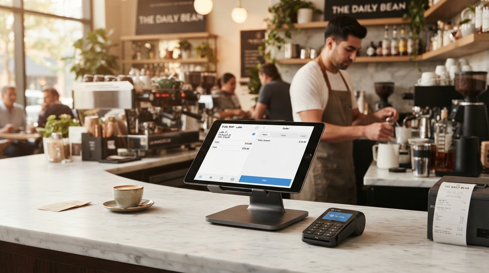

// Adopción sectorial
+20 empresasImplementación integral de un sistema de gestión para alimentos.
[01 // DIRECCIÓN TÉCNICA] / DESARROLLO DE SOFTWARE · SOLUCIONES EMPRESARIALES
Desarrollo aplicaciones empresariales, integro sistemas y optimizo procesos con un enfoque práctico, técnico y orientado a resultados.
// Adopción sectorial
+20 empresasImplementación integral de un sistema de gestión para alimentos.
// Alcance y concurrencia
+16 empresasSistema centralizado de ventas con miles de usuarios diarios.
// Eficiencia de consultas
60s → <1sOptimización de procesos críticos mediante mejoras de consultas.
// Automatización CI/CD
2h → 5 minReducción del tiempo de despliegue mediante pipelines.
// VISIÓN & PERFIL
“Mi experiencia se centra en construir soluciones de software para necesidades empresariales concretas. Me interesa comprender los procesos y convertir oportunidades de mejora en aplicaciones útiles, eficientes y mantenibles.”
“He trabajado en sistemas administrativos, plataformas de ventas, CRM, integración de servicios y optimización de procesos.”
// CAPACIDADES PRÁCTICAS
Stack técnico fundamentado en solidez industrial, mantenibilidad y rendimiento predecible.
Servicios escalables y transacciones consistentes.
C# / .NET Core / Node.js / JavaInterfaces operativas modulares y ergonómicas.
Angular / React / TypeScript / JavaScriptModelado relacional y optimización de queries.
PostgreSQL / SQL Server / MySQL / RedisContratos API, webhooks y colas de mensajes.
RESTful APIs / Event Bus / MicroserviciosResiliencia, pruebas y estándares de código.
Pruebas unitarias / Clean CodeContenedores, automatización y Linux.
Docker / GitHub Actions / CI/CD// PROYECTOS EMPRESARIALES
Soluciones diseñadas con foco en escalabilidad, robustez transaccional y rentabilidad operativa.
01 / GESTIÓN_SAAS · +20 Empresas activas
Problema: Operaciones desarticuladas con descontrol en mermas, recetas e inventarios.
Solución: Plataforma modular para recetas, menús, márgenes de costos y proveedores.
Margen de costo 100% automatizado Ver detalles ↗

02 / POS_PLATFORM · +16 Empresas · Miles de usuarios
Problema: Latencia en puntos de cobro y desconexiones intermitentes.
Solución: Sistema POS de alta velocidad conectado a hardware nativo.
Autorización en tiempo real Ver detalles ↗
03 / DEVOPS_PIPELINE · Latencia reducida a <1s
Problema: Consultas lentas y entregas manuales que elevaban el riesgo operativo.
Solución: Reestructuración de queries y pipeline automatizado.
Despliegues de 2 horas a 5 minutos Ver detalles ↗
04 / CRM_AUTOMATION · Conversión comercial trazable
Problema: Datos dispersos, seguimiento manual y poca visibilidad.
Solución: CRM integrado con automatización de tareas y reportes.
Reportes claros y accionables Ver detalles ↗
// EXPERIENCIA EN CÓDIGO
El código abierto y la experimentación mantienen una mirada crítica sobre las herramientas.
[admin-panel]
Panel administrativo construido con Laravel 12 y Filament.
Ver repositorio ↗[backend-node]
Backend construido en Node.js con un CRUD sencillo de usuarios.
Ver repositorio ↗[gestion-tareas-frontend]
Frontend para la gestión de tareas construido en Angular 19.
Ver repositorio ↗[gestion-tareas-backend]
Backend construido con Sequelize y configuración CORS.
Ver repositorio ↗[prueba-codesa]
Prueba técnica desarrollada con Java y Spring Boot para Codesa.
Ver repositorio ↗// CANAL DIRECTO
Estoy interesado en conversar sobre oportunidades profesionales y proyectos en los que el software pueda resolver problemas reales.